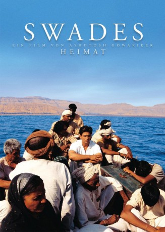

#5194 Swades - Heimat
Alternativ: Swades (Englischer Titel)
 
 IMDB-Wertung: 8.3 / 10
IMDB-Wertung: 8.3 / 10  Metascore: 0
Metascore: 0 
Am selben Tag, an dem er die Staatsbürgerschaft für die USA erhält, gerät der indischstämmige NASA-Innovator Mohan Bhargava ins nostalgische Grübeln. Ob denn die alte Nanny noch lebt? Kurzerhand will Mohan vor Ort nachsehen und macht die Entdeckung, dass einer mit seinem Knowhow im ländlichen Indien gut gebraucht werden könnte. Kurzerhand beschließt Mohan, ein wenig zu bleiben und sich Dingen wie Schule, Strom- und Wasserversorgung zu widmen. Dazu aber wollen erst verkrustete Strukturen überwunden werden.
Jahr: 2004
Dauer: 97 Minuten
FSK: 0
Land: Indien Studio: Rapid Eye MoviesTonspuren:
Untertitel:
Auflösung: SD (576x208) Größe: 699 MB
Genre: Drama
Regisseur: Ashutosh Gowariker
Drehbuch: Changhe An
Soundtrack:
Darsteller:
 Shah Rukh Khan als Mohan Bhargava
Shah Rukh Khan als Mohan Bhargava- Gayatri Joshi als Gita
- Rajesh Vivek als Nivaran Dayal Shrivastav
- Daya Shankar Pandey als Mela Ram
- Makrand Deshpande als Fakir
- Rich Petrelli als Command and Control Center Operator , uncredited
- Kishori Balal als Kaveri amma
- Smith Seth als Chiku
- Lekh Tandon als Dadaji - Freedom Fighter
- Farrukh Jaffar als Fatima Bi
- Vishnudutt Gaur als
- Raja Awasthi als
- Vishwa S. Badola als
- Bhim Vakani als
- Rahul Vohra als Vinod
- Rajesh Balwani als
- Bachan Pachehra als
- Shreyas Pandit als
- Peter Rawley als John Stockton
- Mary Guyer als NASA Controller
Datei: X:\2004(N-Z)\Swades - Heimat (2004, FSK0, 576x208) - CD1.avi seit 29.12.2016
Festplatte: HD 2003-2004-2005(A-F)
 Es gibt insgesamt 54 Filme in der Gruppe '2004(N-Z)'
Es gibt insgesamt 54 Filme in der Gruppe '2004(N-Z)'